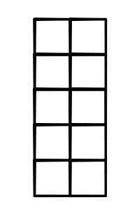
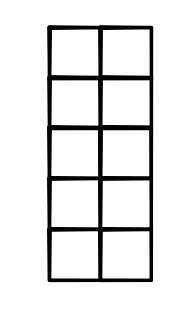

Machine Learning Engineering
Lecture 12
Tensor Functions
Lecture
Outline
Review: Views / Strides
Tensor Functions
Operations
Gradients
Views / Strides
User API
Dims - # dimensions (tensor.dims)
Shape - # cells per dimension (tensor.shape)
Size - # cells (tensor.size)
User Counting
Shape = (2, 3, 2)
Index Counting
(0, 0, 0)
(0, 0, 1)
(0, 1, 0)
Shape Maniputation
Permutation
tensor.permute(1, 0)
 

How does this work
Storage : 1-D array of numbers of length size
Strides : tuple that provides the mapping from user indexing to the position in the 1-D storage.
Strides

Stride Math
Calculating from strides
stride1 * index1 + stride2 * index2 + stride3 * index3 ...Lecture Quiz
Tensor Functions
Functions
Moving from Scalar to Tensor Functions
Implementation?
def add2(a, b): out_tensor = minitorch.zeros(*a.shape) for i in range(a.shape[0]): for j in range(a.shape[1]): out_tensor[i , j] = a[i, j] + b[i, j] return out_tensor
Issues
Different code per different dims
Big autodiff graph
Slow, lots of Python loops
Lots of code
Tensor Functions
Tensors as Variables.
Track graph at tensor level
Functions wrap / unwrap Tensors
out = a + b
Implementation
Function class (forward / backward)
Similar API as scalars
Take / return Tensor objects
Operations
Implementing Tensor Functions
Option: code for loop for each
Lazy. We did this already...
Optimization. how do we make it fast?
Strategy
Implement high-level functions
Lift scalar operators to tensors
Go back and optimize high-level functions
Customize important Functions
Tensor Functions
Unary
new_tensor = tensor.log()Binary (for now, only same shape)
new_tensor = tensor1 + tensor2Reductions
new_tensor = tensor.sum()Tensor Ops
Map - Apply to all elements
Zip (same as zipWith) - Apply to all pairs
Reduce - Reduce a subset
Map

Examples: Map
Binary operations
new_tensor = tensor1.log()
new_tensor = tensor1.exp()
new_tensor = -tensor1Zip

Examples: Zip
Binary operations
new_tensor = tensor1 + tensor2
new_tensor = tensor1 * tensor2
new_tensor = tensor1 < tensor2Reduce

Reduce Options
Can reduce full tensor
Can also just reduce 1 dimension
out = minitorch.rand(3,4,5).mean(1) print(out.shape ) # (3, 1, 5)
Examples: Reduce
Binary operations
new_tensor = tensor1.mean()
new_tensor = tensor1.sum(1)Notes
None of this relies on strides
However, you will need strides to implement
Gradients
Derivatives
Each tensor arg is many args
Returning tensor is like running several Functions
Result backward needs to run chain-rule for each arg and output.
Terminology
Scalar -> Tensor
Derivative -> Gradient
d_out -> grad_out
Recommendation: Reason through gradients as many derivatives
Map Gradient

Zip Gradient

Reduce Gradient